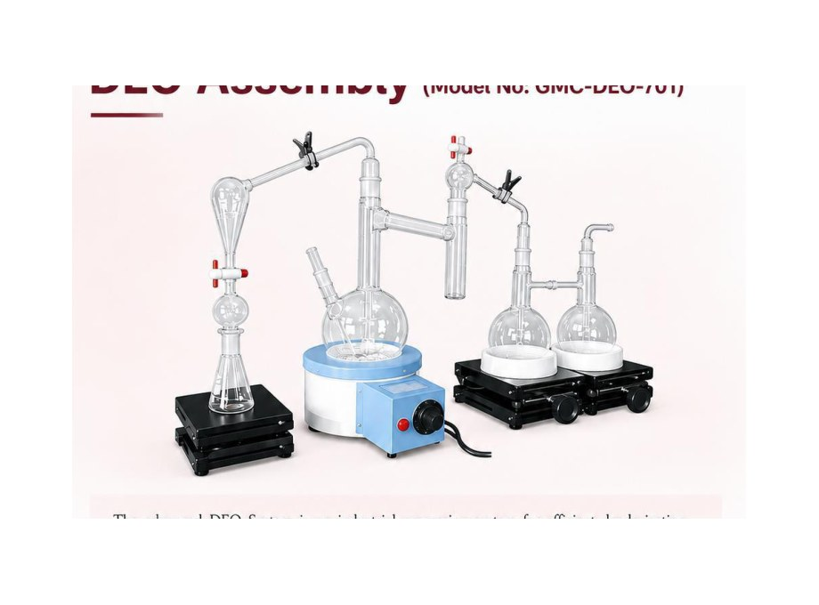
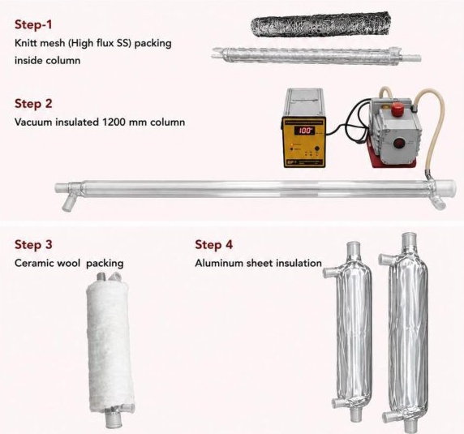

Custom laboratory equipment engineered around your requirement.
Customization is a core GMC Technology strength. We develop custom laboratory equipment, reactors, photochemical systems, scientific glassware and laboratory furniture around application, dimensions, materials, pressure, temperature, optical and service requirements.
Custom engineering is our strength.
Tell us about the reaction, process, capacity or assembly you need.
Discuss relevant materials, dimensions, ports, temperature, pressure or light-source requirements where applicable.
Use the appropriate GMC product family as the starting point for a configured solution.
Laboratory furniture can be developed alongside custom reactors, glassware and instrumentation, allowing workstations, storage, services and scientific equipment to be coordinated as one project.
Explore laboratory furniture →Send your requirement →Custom glassware & assemblies
Customized glassware can be developed for reaction, purification and laboratory process assemblies.
Examples include DEO assemblies, reaction kettle assemblies and vacuum-insulated distillation columns.
Configured systems and assemblies

DEO Assembly
Model GMC-DEO-701 for industrial oil processing and purification applications.

Reaction Kettle Assembly
Model GMC-RKA-801, a modular glass reaction system.

Vacuum-Insulated Column
Model GMC-IVC-901 with knitted SS mesh packing and insulation layers.